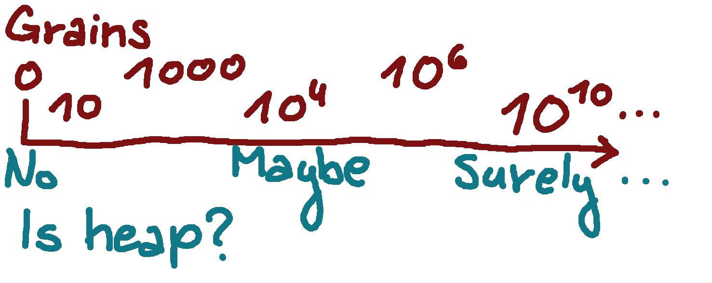

The Spectral Theorem
Sadly, this post is not about eigenvalues. Instead it proposes that most ideas and decisions should not be thought of as binary, a simple "yes" or "no" answer; the correct answer would likely be something in between.
Let's start with a simple example of a classical paradox: the Sorites paradox. It starts with two assumptions, neither of them particularly unreasonable.
- A million grains of sand is a heap of sand
- Heap with a single grain remove persists in being a heap
The second axiom says that an insignificant change in quantity won't change the "heap" property. But then, continuing inductively, we see 999 999 grains of sand still constitutes a heap. And so does 999 998. And so on and so on, until we reach a single grain of sand that's still a heap! Even worse, no grains of sand at all is a heap as well!
There are a few classical solutions to this paradox. The most simple one proposes we set a fixed boundary in the definition of a heap. We axiomatize that 50 000 grains of sand is a heap yet 49 999 is not. This technically solves the paradox, however the solution is not particularly... satisfying. Why the boundary of 50 000? We could, just as easily, choose 37 912 or any other number. Or, more extremely, we could have chosen 49 999 to be the largest heap instead and I would be hard-pressed to find a person who can tell the difference between the two without a careful count.
The solution I (and many others before me) suggest is that we redefine the meaning of the word "heap". Instead of saying that a group of sand simply "is a heap" or "isn't a heap", we continuously assign higher and or lower values to the "is a heap" property. As a concrete example: 0 grains of sand is absolutely not a heap, 10 grains of sand isn't really a heap either; 100 grains is almost there, 10000 grains probably must be, 100 000 surely must be. This particular example works best if the heap property is unbounded above - the more grains we add, the more heap-y it is.
